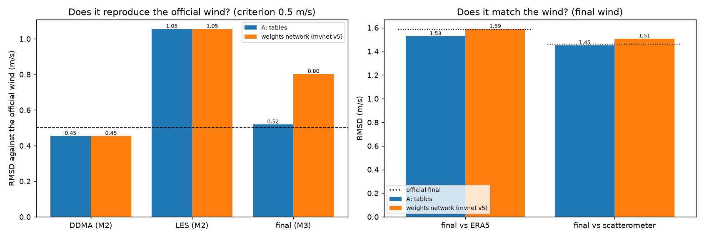
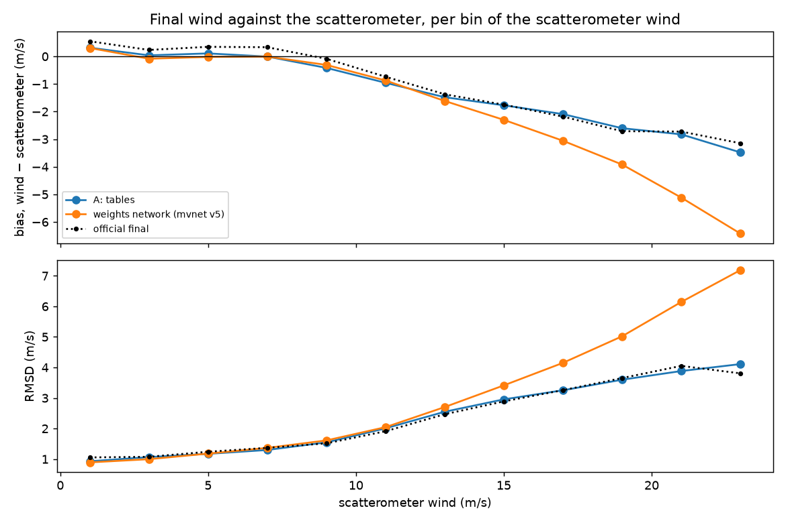
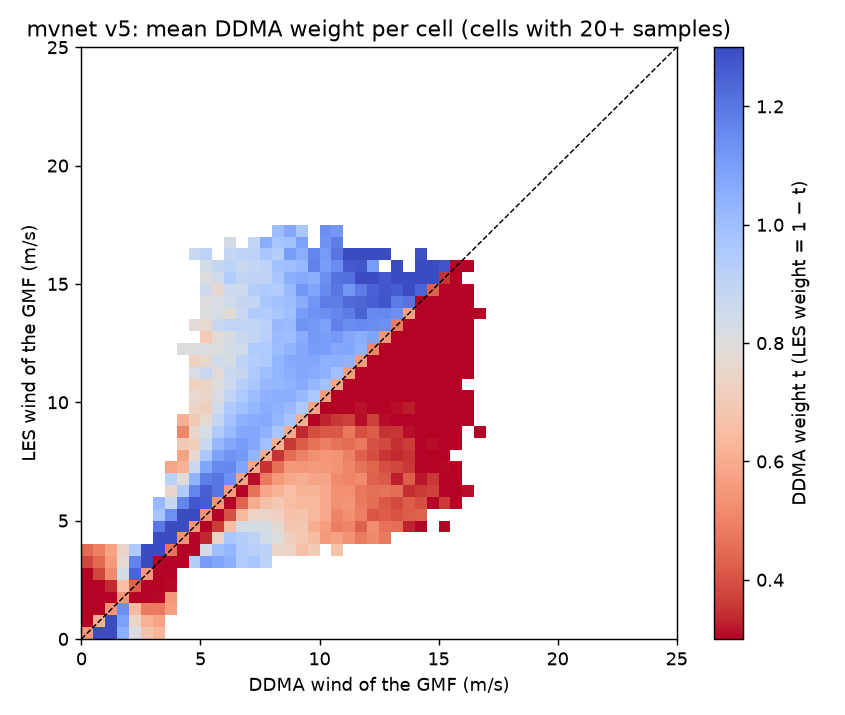
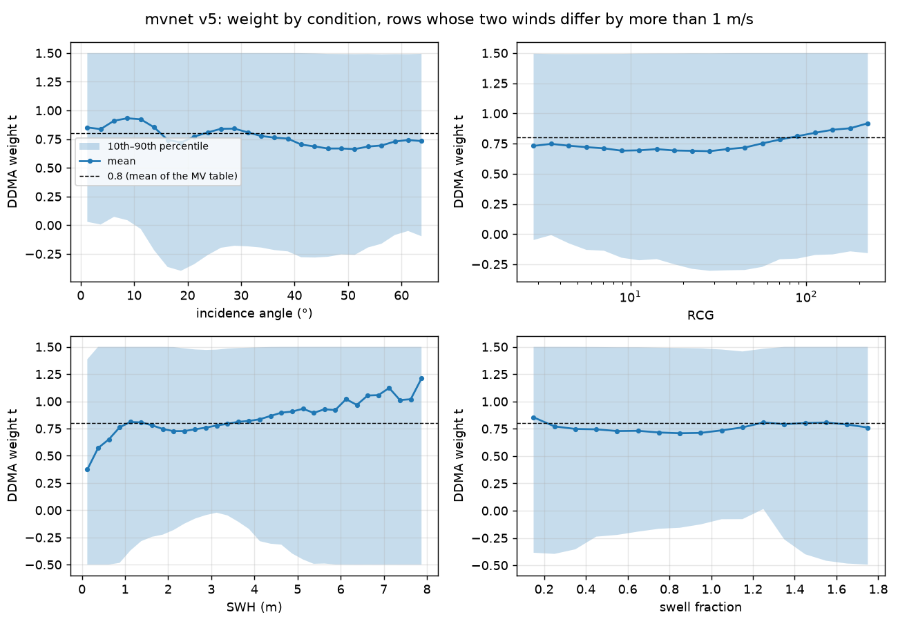
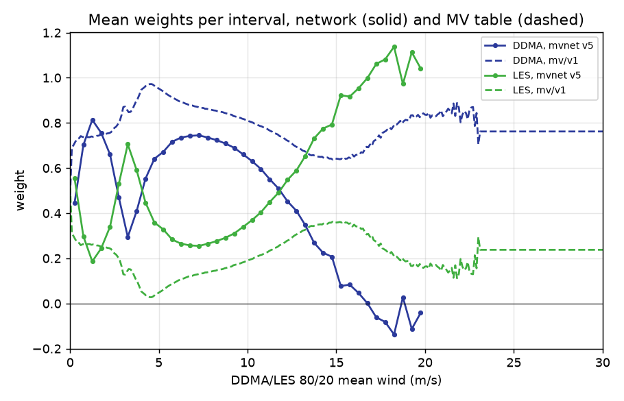
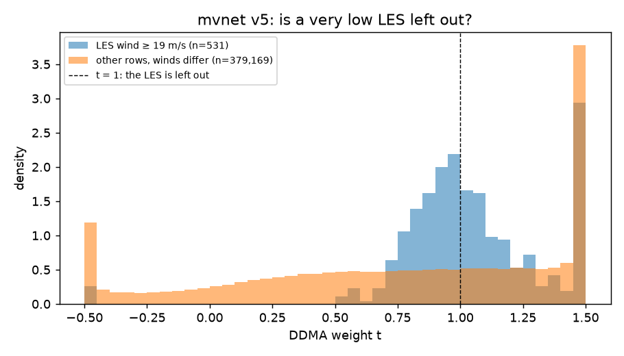

Rede de pesos (mvnet)¶
Uma rede neural pequena que escolhe, amostra a amostra, quanto confiar no vento do NBRCS (DDMA) e no vento do LES. Ela substitui só uma etapa do algoritmo de tabelas: a combinação de mínima variância (MV). Tudo o mais é o mesmo do modelo A: a mesma GMF, o mesmo período de treino (2021) e o mesmo período de teste (fevereiro a dezembro de 2022). A especificação completa é a história 13 do projeto.
| Treino | 2021: 317 dias de treino, 32 de validação; cinco sementes |
| Teste | 01/02/2022 a 31/12/2022, as mesmas amostras e referências do modelo A |
| Data da rodada | 26 e 27/10/2026, no servidor do projeto |
Resumo
- A rede escolhe pesos melhores que a tabela do MV. Na etapa da combinação, o erro contra o ERA5 cai de 1,88 para 1,56 m/s.
- Mas, no vento final, perde para o método de tabelas completo (MV, correção de estado do mar e debias): 1,51 contra 1,45 m/s contra o escaterômetro e 1,59 contra 1,53 m/s contra o ERA5. No vento forte a perda é grande: acima de 20 m/s, o viés contra o escaterômetro é de −5,1 a −6,4 m/s, contra −2,8 a −3,5 m/s do modelo A.
- Por quê: o vento da rede sai achatado em direção à média. Ela aprendeu a puxar para o menor dos dois ventos, o que reduz o erro médio mas subestima o vento forte. O debias estica a distribuição de volta, mas não o suficiente. No modelo A, o vento forte é corrigido pela etapa de estado do mar, que aqui não existe.
- As cinco sementes dão o mesmo resultado (variação de cerca de 0,003 m/s): a conclusão não depende do sorteio.
- Pelo critério de ganho do projeto (melhorar a média das faixas sem piorar o erro geral além de 0,05 m/s), a rede não substitui a tabela do MV no método completo.
O que é testado¶
Hoje o MV escolhe dois pesos fixos em uma tabela, olhando um único número: a média 80/20 dos dois ventos, em faixas de 0,1 m/s. A pergunta deste teste é:
Qual o melhor peso do vento DDMA e do vento LES para cada combinação dos dois ventos, do ângulo de incidência, do RCG e do estado do mar? E usar esse peso melhora o vento em relação à tabela do MV?
O vento da rede é u = t × DDMA + (1 − t) × LES, em que t é o peso do DDMA. A GMF não é reajustada, então qualquer diferença no resultado vem só da combinação.
| Etapa | Modelo A (tabelas) | Rede de pesos |
|---|---|---|
| GMF | gmf/v1 |
gmf/v1, a mesma |
| Combinação | tabela do MV mv/v1 |
a rede |
| Estado do mar | seastate/v1 |
nenhuma: a altura de onda já é entrada da rede |
| Debias | debias/v1 |
reajustado sobre o vento da rede, em 2021 |
A altura de onda entra uma vez só: como entrada da rede. Rodar também a correção de estado do mar da tabela usaria a mesma informação duas vezes, e não daria para saber qual etapa trouxe o ganho. Por isso a rede de pesos é comparada com o modelo A em duas etapas: a combinação sozinha (a rede contra o MV da tabela, as duas antes de qualquer correção de mar) e o vento final.
Uma variante com correção aditiva (mvnet+, que também soma uma correção vinda do estado do mar) foi especificada, mas não foi treinada: o teto linear dela não mostrou ganho.
Entradas¶
| # | Entrada | De onde vem |
|---|---|---|
| 1 | vento DDMA | GMF v1 aplicada ao NBRCS, antes do corte em zero |
| 2 | vento LES | GMF v1 aplicada ao LES, antes do corte em zero |
| 3 | ângulo de incidência | produto L2 |
| 4 | RCG | produto L2, em escala log |
| 5 | altura de onda (SWH) | produto L2 (GFS), a mesma que a tabela de estado do mar usa |
| 6 | fração de swell | produto L2 |
| 7 | indicador de SWH ausente | 0 ou 1 |
As entradas 1 a 6 são padronizadas (média 0, desvio 1) com a média e o desvio das amostras de treino.
O que ficou de fora, e por quê:
- NBRCS e LES. Para um mesmo ângulo, a GMF transforma cada um no seu vento de forma única, então o vento já traz a mesma informação. O único lugar em que o vento perde informação é o corte em zero no vento fraco; por isso os ventos entram antes desse corte.
- Combinações dos dois ventos (a média 80/20, a diferença): a rede as forma sozinha.
- Satélite, antena e PRN: os transmissores mudam de 2021 para 2022, e a rede aprenderia coisas que não valem no teste.
Arquitetura¶
Escrita em PyTorch.
- Corpo: rede densa de 3 camadas de 64 neurônios (
Linear,LayerNorm,SiLU), cerca de 9 mil parâmetros. - Saída: o peso do DDMA,
t = 0,5 + tanh(z), limitado entre −0,5 e 1,5. O limite passa um pouco de 0 a 1 porque os pesos da própria tabela do MV também passam (o MV permite peso negativo quando os erros dos dois ventos andam juntos). - Início: o peso começa em 0,8, o peso médio do DDMA na tabela do MV. O treino parte de uma combinação próxima da tabela.
Estratégia de treino¶
- Dias: 2021. Quatro blocos de 8 dias inteiros, espalhados pelo ano (fevereiro, maio, agosto e novembro), ficam para validação, com 2 dias de folga de cada lado que não entram em nenhuma parte. São 317 dias de treino e 32 de validação.
- Amostragem estratificada, para acertar os extremos. Uma amostra uniforme quase não teria vento forte. Cada dia de treino contribui com até 200 mil amostras, divididas igualmente entre 11 faixas de vento (de 2 em 2 m/s até 20, e acima de 20). Uma faixa com poucas amostras entrega todas as que tem. No total, 42,4 milhões de amostras de treino; todas as amostras do ano acima de 14 m/s estão incluídas.
- A faixa vem dos ventos da tabela, nunca do ERA5. Escolher as amostras pelo ERA5 seria escolher pela resposta e enviesaria os pesos.
- Perda: Huber de 1 m/s entre o vento da rede e o ERA5, mais uma preferência fraca do peso por 0,8 (
0,01 × (t − 0,8)²). Onde os dois ventos concordam, qualquer peso dá o mesmo vento; sem essa preferência, a rede deixaria ali valores aleatórios, e os mapas de peso mostrariam ruído. - Otimização: AdamW, taxa 0,001 com decaimento cosseno, lotes de 4.096, até 30 épocas.
- Parada: quando a média do erro das 11 faixas na validação para de cair por 3 épocas. É a média das faixas, e não o erro geral, para que um ganho nos ventos comuns não esconda uma perda nos extremos.
- Sementes: cinco treinos independentes. A variação entre eles mostra o quanto de uma diferença é acaso.
O que foi assumido¶
| Suposição | Consequência |
|---|---|
| O ERA5 é a referência do treino | Um ganho só contra o ERA5 pode ser imitação dele; o veredito independente é o escaterômetro |
Os pesos valem para a gmf/v1 |
A ponta de vento fraco da gmf/v1 tem uma distorção conhecida, e a rede compensa parte dela; uma GMF corrigida exige treinar de novo |
| A altura de onda entra uma vez | Sem a correção de estado do mar depois da rede; a comparação é feita na combinação e no vento final |
| A altura de onda é a do GFS | Como nas tabelas |
| O debias é ajustado com 2021 inteiro, sobre o vento da rede | Como nas tabelas, para a comparação com o modelo A ficar justa |
Teto linear¶
Antes de treinar, uma regressão linear com a mesma forma da rede mede se há ganho possível. Na regressão, o peso pode variar de forma linear com as condições e com o vento, e os dois pesos somam 1. Ela é ajustada nos dias de treino e avaliada nos dias de validação (40,7 milhões de amostras).
Critério de ganho: a média do erro das 11 faixas melhora, e o erro geral não piora mais de 0,05 m/s. Os extremos precisam melhorar sem que os ventos comuns paguem por isso.
| Teto | Erro geral (referência) | Média das 11 faixas (referência) | Ganha? |
|---|---|---|---|
mvnet: pesos |
1,882 m/s (1,864, MV) | 3,87 m/s (4,72) | Sim |
mvnet+: pesos e correção |
1,802 m/s (1,501, MV + estado do mar) | 3,67 m/s (1,85) | Não |
O ganho do mvnet está nos ventos fortes: acima de 20 m/s, o erro cai de 14,0 para 10,2 m/s. Nos ventos de 2 a 10 m/s, os dois ficam praticamente iguais. A correção linear do mvnet+ perde para a tabela de estado do mar, que é uma grade de vento × altura de onda e corrige de forma diferente em cada vento.
Uma primeira versão do teto foi descartada por dois defeitos: os pesos não somavam 1 (a regressão podia encolher os ventos fortes, o que a rede não pode) e o peso não podia variar com o vento (era menos flexível que a própria tabela do MV). O registro está na especificação.
Resultados¶
Cinco sementes treinadas, cada uma com o seu debias, aplicadas a 2022 e avaliadas pelo mesmo evaluate do modelo A. Os valores da rede são a média das cinco, com o desvio entre elas. As figuras usam a semente mediana pela medida de validação (mvnet/v5).
Onde cada variante é julgada¶
| Comparação | Modelo A | Rede de pesos (5 sementes) | Oficial |
|---|---|---|---|
| Combinação (etapa MV) contra o ERA5, RMSD | 1,879 | 1,557 ± 0,001 | — |
| Vento final contra o oficial final (M3), RMSD | 0,518 | 0,804 ± 0,003 | — |
| Vento final contra o ERA5, RMSD | 1,527 | 1,591 ± 0,002 | 1,585 |
| Vento final contra o ERA5, viés | +0,02 | −0,00 ± 0,01 | +0,30 |
| Vento final contra o escaterômetro, RMSD | 1,450 | 1,509 ± 0,003 | 1,463 |
| Vento final contra o escaterômetro, viés | −0,19 | −0,22 ± 0,01 | +0,08 |
| Média do RMSD por faixa do escaterômetro (0 a 24 m/s) | 2,37 | 3,06 | — |
O M2 (vento DDMA e vento LES contra o oficial) não muda: a GMF é a mesma do modelo A.

Por faixa de vento¶

| Faixa do escaterômetro | Pares | Viés, modelo A | Viés, rede | RMSD, modelo A | RMSD, rede |
|---|---|---|---|---|---|
| 0–2 m/s | 1,3 mi | +0,32 | +0,30 | 0,93 | 0,89 |
| 2–4 m/s | 5,4 mi | +0,04 | −0,08 | 1,07 | 1,00 |
| 6–8 m/s | 14,3 mi | −0,01 | −0,00 | 1,30 | 1,37 |
| 10–12 m/s | 4,1 mi | −0,96 | −0,89 | 2,01 | 2,04 |
| 14–16 m/s | 421 mil | −1,77 | −2,30 | 2,96 | 3,40 |
| 18–20 m/s | 24 mil | −2,60 | −3,90 | 3,60 | 5,01 |
| 22–24 m/s | 1,8 mil | −3,48 | −6,44 | 4,11 | 7,20 |
No vento fraco, abaixo de 4 m/s, a rede é um pouco melhor. A partir de 12 m/s ela perde, e a perda cresce com o vento.
Os pesos aprendidos¶
Sobre os dois ventos¶

A leitura mais importante da página. Abaixo da diagonal, onde o vento DDMA é maior que o LES, o peso do DDMA é baixo (vermelho): a rede confia no LES. Acima da diagonal, onde o LES é maior, o peso do DDMA passa de 1 (azul): a rede confia no DDMA e até se afasta do LES. Nos dois lados, ela puxa para o menor dos dois ventos. Não é uma escolha de qual sensor é melhor em cada condição: é um jeito de reduzir o erro médio encolhendo o vento, o que custa caro no vento forte.
Contra cada condição¶

Nas amostras em que os dois ventos diferem em mais de 1 m/s:
- Ângulo: o peso médio do DDMA fica entre 0,65 e 0,95, mais alto abaixo de 15° e mais baixo entre 40° e 55°.
- RCG: quase constante, com o DDMA ganhando peso só com RCG muito alto (acima de ~70).
- Altura de onda: é a condição que mais muda o peso. Com mar baixo (menos de 1 m), o LES pesa mais; com mar alto (acima de 5 m), o DDMA pesa mais de 1. É o jeito que a rede tem de usar a altura de onda sem uma correção aditiva.
- Fração de swell: quase não muda o peso.
A faixa entre os percentis 10 e 90 vai de −0,5 a 1,5, os limites da saída: em muitas amostras a rede usa o peso no limite, o que confirma que ele está servindo para estender a reta entre os dois ventos, e não só para escolher entre eles.
No formato da Figura B4 do ATBD¶

A tabela do MV dá ao DDMA de 0,65 a 0,97 em toda a faixa. A rede faz o contrário no vento forte: o peso do LES passa o do DDMA a partir de ~12 m/s e chega a 1 acima de 17 m/s. A Figura B4 do ATBD faz o oposto, zerando o LES no vento forte. A diferença tem a mesma origem: a rede escolhe o menor dos dois ventos, e no vento forte esse costuma ser o LES, que satura.
O LES muito baixo¶

Nas 531 amostras da figura com vento LES de 19 m/s ou mais, que vêm de um LES medido muito baixo (o caso dos 68 a 70 m/s do oficial), o peso do DDMA fica perto de 1. A rede aprendeu sozinha a deixar o LES de fora nesses casos, como o produto oficial faz.
Como ler¶
- O que se pode afirmar. Na mesma GMF, com o mesmo treino e o mesmo teste, a rede de pesos melhora a etapa da combinação, mas não melhora o vento final do método de tabelas: piora contra o escaterômetro (referência independente) e contra o ERA5, sobretudo acima de 12 m/s. A diferença é muito maior que a variação entre sementes.
- A decisão que isso apoia: manter a tabela do MV no método. A rede não deve substituí-la.
- O que fica de útil: a rede mostrou que o peso depende muito da diferença entre os dois ventos e da altura de onda, e que o LES muito baixo deve ser descartado. São pistas para melhorar a tabela, por exemplo com o MV por faixa de altura de onda.
- Próximos testes possíveis: aplicar a correção de estado do mar da tabela depois da rede (rever a regra de usar a altura de onda uma vez só) e treinar o
mvnet+, que soma uma correção. Os dois atacam a causa da perda: o vento forte achatado.